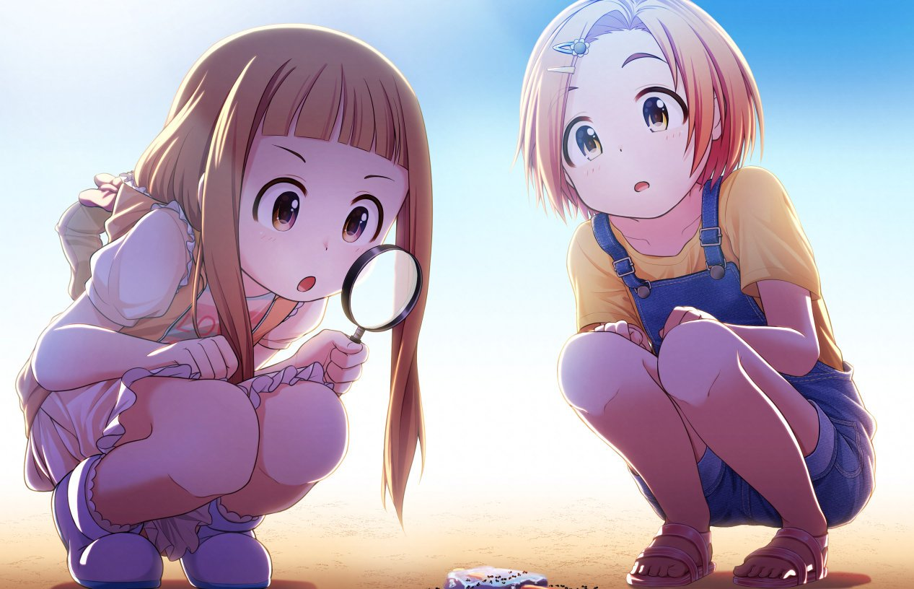

What is "loli"?
Loli is that warm fuzzy feeling you feel in your soul. It is the love that can only exist deep down in your heart. Loli is a cute girl who hugs you and calls you "onii-chan~".
It is, according to Wikipedia:
A Japanese slang term which represents a cultural version of a more youthful or childlike female appearance, mostly used to describe fictional characters. For example, girls under the age of 13 or 14 can be considered lolis. However, females whose bodies have not yet reached adulthood can also be considered lolis whilst disregarding their age as criteria.
Loli describes a type of fictional character. Lolicon describes the genre of media which focuses on lolis, as well as the individuals (lolicons) who are attracted to them.
The equivalent terms for young, prepubescent males is shota/shotacon, and most of the information here remain true for this genre as well.
Toddlercon is often used to described the extreme end of this, where the character appears to have the age of a toddler.
Is loli legal?
This is a common question from those who have just started experiencing love for loli. It is also a very difficult one to provide a solid answer for.
To start with, we should refine that question. Where do you live? What laws apply to you? Check your local laws.
It can also make a difference if you are importing physical goods, selling them to others, viewing digital images/videos on the internet, creating them, saving them to your device, or making those images and videos accessible to others via the internet.
It might not be illegal to view or possess something, but that doesn't mean there aren't laws against importing goods or running a loli website for others! Sometimes it is considered legal, but customs will seize and confiscate products you try to import!
Legal grey area
Often, laws are written ambiguously. Check your country's and local jurisdiction's definition of "Child Pornography." Does it say anything about drawings? Written works? Depicting persons, whether fictitious or real? Determine if your region's Child Pornography laws are worded to only apply to works depicting real, living persons.
There may be other laws on the books targetted at pornography. In the US, these would be "Obscenity Laws", which vary from state to state. The UK likewise has the "Obscene Publications Act", as well as laws on "Extreme Pornography". Look for laws specifically designed to take away people's freedom to view certain types of pornography. Look for if it says anything about drawn or fictional representations of minors.
It is best to do your own research based on your laws and your particular situation. NEVER just go off of what Wikipedia says for your legal advice. With that said, Wikipedia (Legal Status of drawn pornography of minors) is very useful as a springboard to find sources for the information you seek.
I live in the United States of America. Is viewing loli legal?
I am not a legal expert, or even a legal novice. However, my personal conclusions based on extensive amateur research is this:
- Federal law does NOT view pornographic lolicon as the same thing as child pornography.
- Federal law establishes the concept of "obscenity laws" which permit classes of "obscene pornography" to be excluded by the 1st Amendment.
- States create the obscenity laws that apply in their legal jurisdiction based on Federal guidelines, and States determine, based on its own community and social views and values, what constitutes as "obscene".
- Thus, the legal status of viewing, creating, possessing, or distributing pornographic lolicon media hinges entirely on your State's laws.
Most states that have a legal precedent against lolicon have established it against individuals who were on trial for Child Pornography, or who were on the Sex Offender's registry for previous CP charges, or a sexual offense against a child. This is generally done to increase a person's prison sentence.
I am not aware of a case in the US where a person has been convicted for loli content alone. There is a strong case of unconstitutionality to be made against Obscenity Law for anyone who is able to bring their case to a high enough court.
Hey fuckface, you got me arrested!
I would immediately contact the Comic Book Legal Defense Fund and the American Civil Liberties Union. Both organizations have a history of handling legal battles against infringement of first amendment rights, including and not limited to pornographic lolicon artwork.
If you were arrested for lolicon and nothing else, a lot of people, myself included, have a vested interest in the proceedings of your trial. Reach out and let's talk.

Please tell me where to find some!
Now that you're familiar with the subject, I know you are ready to enjoy all of the beauty and splendour that loli has to offer! These sites should be considered springboards into finding your way into the wonderful world of loli!
Are you running a loli-centric, or loli-friendly service, and want to be on this list? Let me know so I know how to find it!
Zeronet
Info/Discussion
Downloads
Manga
Tor - The Onion Router
- I am currently unaware of any loli-centric or even hentai-centric hidden sites that might be hosted on Tor. I would be curious to know if there are any!
i2p - Invisible Internet Project
Clearnet
Images
-
Pixiv
Artists post their artwork directly to this site. Due to Japanese censorship laws, all depictions of genetalia must be censored to be compliant with the site's tos.
-
Nije
Artists directly upload new artwork to the site. This site is in Japanese only, and can be difficult for non-Japanese readers to navigate.
-
Sankaku Complex
A booru operated by otaku tabloid "Sankaku Complex." The site seems to be entirely supported by ads. Toddlercon is accessible by registering an account and enabling it in the options.
-
Gelbooru
Gelbooru runs on its own gelbooru software. The website is aggressively ad-supported. Toddlercon is not permitted on the site due to historical conflicts with ad providers. Gelbooru has a patreon account, but none of the stretch goals indicate intentions of steering away from being funded by ad revenue.
-
Lolibooru
Lolibooru is a loli-centric booru. There is less content than on Gelbooru or Sankaku, but all of it is loli or shota. The site welcomes toddlercon. There are no ads on the site or any donation link I have been able to find, so it must be paid for out of pocket by the administrator.
-
e621.net
This is like any *booru site only dedicated to the furry community. This can be a valuable source for finding furry or kemono loli, as well as loli x animal content.
-
Hentai Foundry
Artists who still draw both loli and non-loli artwork can be contacted here and may have commission information listed. Loli was forcibly removed from the site many years ago however.
Manga
-
Exhentai (aka Sadpanda)
Exhentai is one of the largest and oldest websites for doujins and h-manga. Hosts toddlercon content, and pretty much any other "taboo" fetish content you can think of. Often has torrent downloading available for galleries. If not, you can direct download if you have enough points.
-
Hitomi
Appears to have a pretty decent selection. Allows toddlercon, funded by ads and btc donations. Allows anyone to download archives with a single push of a button, no registration or anything required!
-
Pururin
You can read the manga online, or download after making an account. Powered by ad revenue, but I think it also has a "premium account" revenue model of some kind. The site does host toddler content.
-
Nhentai
Another online h-manga website. Allows downloading the manga. Ad powered. No toddler. Lack of toddler aside, appears to have more selection than Pururin.
Erotic literature
-
ASSTR
A large repository of fictional sex stories, some of which involve children characters! This FAQ will be very helpful in finding stories you are interested in!
-
The Hidden Bookcase
Another repository of fictional sex stories.
-
Fanfiction.net
A small amount of loli erotica can be found here. If you are searching for r34 of a character, this is the most likely place to find it on.
H-games and Visual Novels
-
dlsite.com
A Japanese-based online store for hentai games, some visual novels, doujins, and other things. There are separate Japanese and English stores. The English speaking section has pretty limited selection for reasons that are unclear.
-
Nyaa
Nyaa provides torrent downloads for anime, manga, vns, and virtually anything a weaboo could ask for.
Community
-
All the Fallen
Loli and Shota forum community. Pretty active.
-
Little Angels Hentai No HTTPS!
Pretty old forum community that has withstood the tests of time.
-
8chan
(via TOR)
8chan has a couple loli boards (try /loli/ or /delicious/ to start with) with decent drawthreads and actual artists contributing fresh art.